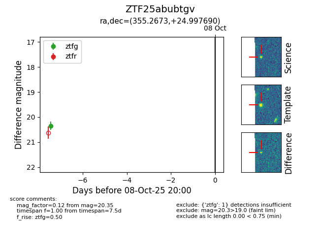

FINK: ZTF25abubtgv
Lasair: ZTF25abubtgv
ALeRCE: ZTF25abubtgv
ZTF25abubtgv (ztf,fink)
equatorial (ra, dec) = (355.2673,+24.99769)
galactic (l, b) = (103.3497,-35.18399)

last ztfg=20.35
1 ztfg detections